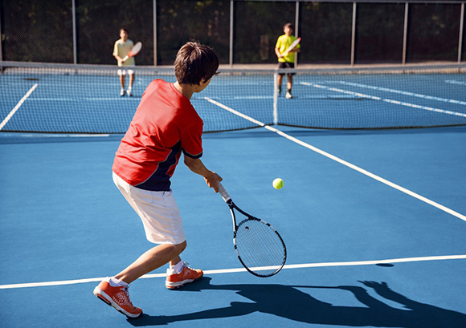
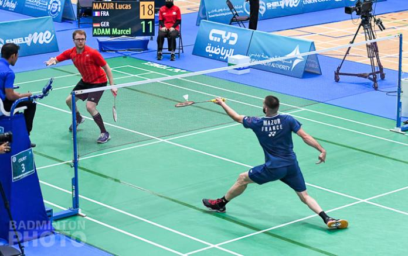
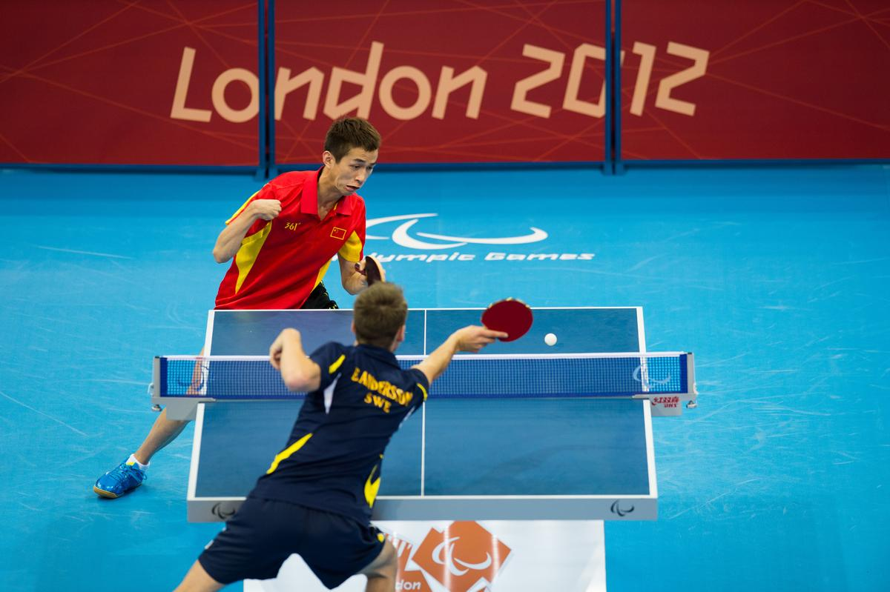

Dual Sports are basically a sport that played by two people opposing each other. Examples of dual sports include tennis and racquetball. Some sports can dual and team. For instance, wrestling can be considered both a dual and a team sport, as the wrestler must compete individually on the mat against his or her opponent, but his performance affects the overall team's score.

Dual Sports
Tennis

Tennis is a racket sport that is played either individually against a single opponent (singles) or between two teams of two players each (doubles). Each player uses a tennis racket that is strung with cord to strike a hollow rubber ball covered with felt over or around a net and into the opponent's court. The object of the game is to manoeuvre the ball in such a way that the opponent is not able to play a valid return. The player who is unable to return the ball validly will not gain a point, while the opposite player will.
Tennis is played by millions of recreational players and is a popular worldwide spectator sport.The four Grand Slam tournaments (also referred to as the majors) are especially popular: the Australian Open, played on hardcourts; the French Open, played on red clay courts; Wimbledon, played on grass courts; and the US Open, also played on hardcourts.
Badminton
Badminton is a racquet sport played using racquets to hit a shuttlecock across a net. Although it may be played with larger teams, the most common forms of the game are "singles" (with one player per side) and "doubles" (with two players per side). Badminton is often played as a casual outdoor activity in a yard or on a beach; formal games are played on a rectangular indoor court. Points are scored by striking the shuttlecock with the racquet and landing it within the other team's half of the court.
Each side may only strike the shuttlecock once before it passes over the net. Play ends once the shuttlecock has struck the floor or ground, or if a fault has been called by the umpire, service judge, or (in their absence) the opposing side.
The shuttlecock is a feathered or (in informal matches) plastic projectile that flies differently from the balls used in many other sports. In particular, the feathers create much higher drag, causing the shuttlecock to decelerate more rapidly. Shuttlecocks also have a high top speed compared to the balls in other racquet sports. The flight of the shuttlecock gives the sport its distinctive nature.

Table Tennis

Table tennis, also known as ping-pong and whiff-whaff, is a racket sport derived from tennis but distinguished by its playing surface being atop a stationary table, rather than the court on which players stand. Either individually or in teams of two, players take alternating turns returning a light, hollow ball over the table's net onto the opposing half of the court using small rackets until they fail to do so, which results in a point for the opponent. Play is fast, requiring quick reaction and constant attention, and is characterized by an emphasis on spin relative to other ball sports, which can heavily affect the ball's trajectory.
Owed to its small minimum playing area, its ability to be played indoors in all climates, and relative accessibility of equipment, table tennis is enjoyed worldwide not just as a competitive sport, but as a common recreational pastime among players of all levels and ages.